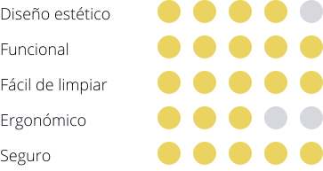
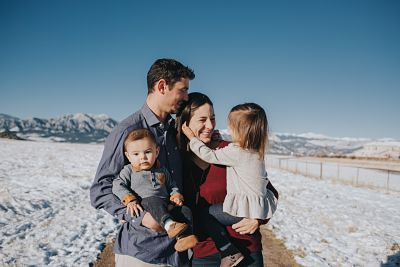

Boschtok
Rediseño de producto
2016-17, 3 meses, 5 personas
Este proyecto ha consistido en rediseñar la batidora de mano Bosch Hergomixx, para una familia con hijos pequeños. El objetivo principal del proyecto ha sido desarrollar un producto que se adapte mejor a las necesidades del usuario objetivo, basándose en un producto existente.
Análisis
Encuestas a usuarios
Mediante una encuesta realizada a 35 personas, se han podido identificar los factores que más valoran los usuarios en cuanto a las batidoras de mano.
Usuario objetivo: Familia con hijos
Matrimonio de 35 y 38 años, con dos hijos pequeños de 1 y 5 años. Los dos adultos son profesores, trabajan de forma estable y su estatus socioeconómico es de nivel medio. Les gusta estar activos y compartir tiempo con sus hijos, aprecian cocinar y realizar actividades con ellos tanto dentro como fuera de casa.
“Nuestro objetivo en la vida es educar a nuestros hijos, y queremos que el camino sea divertido”
“¡Me encanta hacer galletas de colores con mis padres!”
Resultado
Boschtok es el nuevo modelo lanzado por Electrodomésticos Bosch, una batidora de mano con un aspecto totalmente revolucionario para la marca. Inspirado en elementos de la naturaleza, el modelo consigue un impacto estético debido a su forma sofisticada y colores vivos, convirtiéndose de esta forma en el modelo más atrevido de la marca.
Además, está muy presente la tecnología innovadora que caracteriza tanto a esta marca, ya que dispone de varios movimientos para batir alimentos. El color amarillo es el predominante en la gama de la batidora Boschtok. Sin embargo, se ofrece una gran variedad de colores para que cada familia tenga la opción de personalizar su batidora según sus gustos y preferencias.
Detalles
Boschtok cuenta con una minuciosa selección de materiales, ya que a la hora de diseñarlo, se ha tenido en cuenta la comodidad del usuario, el objetivo de conseguir una estética atractiva y los alimentos con los que la batidora estará en contacto. El regulador está dotado de un diseño sencillo e intuitivo, que a su vez transmite limpieza, elegancia y buena calidad con acabados metálicos.
¿Hablamos?
Si te gusta lo que ves, no dudes en ponerte en contacto conmigo.
Me encantaría conocerte.